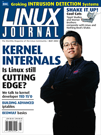

|
Contents: |
Submitters, send your News Bytes items in PLAIN TEXT format. Other formats may be rejected without reading. You have been warned! A one- or two-paragraph summary plus URL gets you a better announcement than an entire press release. Submit items to gazette@linuxgazette.net
 The May issue of Linux Journal is on newsstands now. This issue focuses on kernel internals. Click here to view the table of contents, or here to subscribe.
All articles through December 2001 are available for
public reading at
http://www.linuxjournal.com/magazine.php.
Recent articles are available on-line for subscribers only at
http://interactive.linuxjournal.com/.
 CBDTPA
CBDTPA
DMCA
MS Government XP

The following articles are in the May/June issue of the E-zine
LinuxFocus:
An interview at Linux Journal about the Linux movement and Linux Users Groups in India.
Also at Linux Journal, Linux WiFi Router brings in Subscribers for Ghana's Largest ISP.
Slashdot links:
A couple of links which might be of use when considering new hardware purchases are Linux.org's hardware list and The Linux Hardware Database. Slashdot also recently ran a story on hardware manufacturers that actively support Linux.
Some links from Linux Weekly News
Some links from Slashdot:
Some links from the O'Reilly stable of websites:
Some interesting stories from the The Register:
Linux Today have highlighted several interesting links over the past month:
Listings courtesy Linux Journal. See LJ's Events page for the latest goings-on.
|
Networld + Interop (Key3Media) | May 7-9, 2002 Las Vegas, NV http://www.key3media.com/ |
|
IBM developerWorks Live! | May 7-10, 2002 San Francisco, CA http://www-3.ibm.com/events/ibmdeveloperworkslive/index.html |
|
Strictly e-Business Solutions Expo (Cygnus Expositions) | May 8-9, 2002 Minneapolis, MN http://www.strictlyebusiness.net/strictlyebusiness/index.po? |
|
O'Reilly Emerging Technology Conference (O'Reilly) | May 13-16, 2002 Santa Clara, CA http://conferences.oreillynet.com/etcon2002/ |
|
Embedded Systems Conference (CMP) | June 3-6, 2002 Chicago, IL http://www.esconline.com/chicago/ |
|
USENIX Annual (USENIX) | June 9-14, 2002 Monterey, CA http://www.usenix.org/events/usenix02/ |
|
PC Expo (CMP) | June 25-27, 2002 New York, NY http://www.techxny.com/ |
|
O'Reilly Open Source Convention (O'Reilly) | July 22-26, 2002 San Diego, CA http://conferences.oreilly.com/ |
|
USENIX Securty Symposium (USENIX) | August 5-9, 2002 San Francisco, CA http://www.usenix.org/events/sec02/ |
|
LinuxWorld Conference & Expo (IDG) | August 12-15, 2002 San Francisco, CA http://www.linuxworldexpo.com |
|
LinuxWorld Conference & Expo Australia (IDG) | August 14 - 16, 2002 Australia http://www.idgexpoasia.com/ |
|
Communications Design Conference (CMP) | September 23-26, 2002 San Jose, California http://www.commdesignconference.com/ |
|
Software Development Conference & Expo, East (CMP) | November 18-22, 2002 Boston, MA http://www.sdexpo.com/ |
Lindows Controversy
Lindows is not only in legal wrangles with Microsoft, but has now run foul of the Free Software Foundation. It would appear that Lindows has been somewhat casual about distributing source code for their products. Bruce Perens has written an open letter to Michael Robertson (Lindows CEO) calling on the company to be honest partners in the free software endeavor. Mono Linux has published a report and analysis of Lindows, available in two parts ( one and two).
New version of the IP Masquerade HOWTO is available
David Ranch has announced the release of the IP Masquerade HOWTO.
Recent changes include:
$20m Compaq Linux Win
Compaq Computer Corporation have announced a three-year, $20 million agreement with RackShack, the hosting services arm of of Everyones Internet. Compaq will equip RackShack's IT data centers with industry-standard Compaq ProLiant servers for a tier one, Linux-based Web hosting solution.
Debian
Bdale Garbee, an Engineer/Scientist in the Linux Systems Operation group for Hewlett-Packard, has been elected Debian project leader.
Debian Weekly News recently reported that Nathan Hawkins has announced a new base tarball for those who would like to see Debian GNU/FreeBSD live. The status of this port is available here.
Gentoo
Linux Planet have recently reviewed Gentoo Linux, a source based distribution aimed at people comfortable with software development (among others).
Gentoo can also be installed on the PPC platform, and has been reviewed by iMacLinux (link courtesy Linux Today).
Hancom
Linux and Main have an interview with Bart Decrem, co-founder of Eazel (producers of the Nautilus graphical shell for GNOME) and vice president of Hancom Linux. Decrem discusses software in Korea, why companies and governments outside the US don't want to become too dependent on Microsoft, and more. Also featured on Slashdot. While on the subject of Hancom Linux, Linux and Main also reported that Hancom Linux is shipping what is believed to be the first Arab-language Linux distribution. As reported by OSNews, Hancom have now completely focused on the Linux platform for their Hancom Office productivity suite.
SOT Linux
Linux Today have the story that SOT, publisher of Best Linux, has announced a change of name for its Linux distribution to coincide with the release of a new version of the distro. In future it will be known as SOT Linux.
SuSE
SuSE Linux and IBM have announced a broad services alliance that will enable both companies to jointly provide Linux support and services to corporate customers around the world. In the agreement, IBM Global Services and SuSE will collaborate on support and professional services. IBM will package and support turnkey implementations of SuSE Linux Enterprise Server, backed by SuSE's expert development, maintenance, and support teams. In addition to this complete services offering, the two organizations will also collaborate on customer engagements and supplement each other's skills to provide a formidable Linux services delivery capability for corporate customers.
Slashdot ran the story that SuSE 8.0 has shipped, and now includes KDE 3.0, kernel 2.4.18, and various other upgrades/enhancements.
Mammoth PostgreSQL Released
Mammoth PostgreSQL from Command Prompt, Inc. is an SQL-compatible Object Relational Database Management System (ORDBMS). It is designed to give small to medium size businesses the power, performance, and open-standard support they desire. 100% compatible with the PostgreSQL 7.2.1 release, Mammoth PostgreSQL provides a commercially-supported PostgreSQL distribution for Solaris, MacOS X and Red Hat Linux x86 platforms. Mammoth PostgreSQL ships with built-in support for SSL connectivity (Native and ODBC), as well as programming APIs for C/C++, Perl, and Python. There are one-time and subscription-based licensing models available for immediate purchase.
Command Prompt, Inc., provides support, custom programming, and services for PostgreSQL. Service contracts, as well as time and materials support are available, allowing for single-point accountability for a customer's database solution.
Linux Growth Spurs Tool Sales for Etnus
Etnus, a supplier of debuggers for complex code, have announced record-breaking sales of its TotalView debugger on Intel Linux platforms, linking the sales to increased development of complex and mission critical codes on Linux systems. Both sales volume and number of licenses sold for the Etnus TotalView debugger on Intel Linux platforms doubled over first quarter 2001 and, for the first time, Etnus reported that Linux was the top-selling platform. Etnus TotalView is a cross-platform, state of the art debugger supporting C/C++ and Fortran.
Etnus believes Linux will continue to be a leader among the many platforms they support and will continue to expand functionality there. The next release of TotalView will add support for GCC 3.X and the Intel compilers for Linux.
CylantSecure
CylantSecure is an intrusion detection system for Linux and other Unix variants that stops attacks before they occur by monitoring the behavior of the operating system. It has been developed and produced by Cylant, a division of Software Systems International. By adding instrumentation to the kernel, Cylant is enabled to benchmark server behavior patterns and detect changes in those patterns during operation. If an abnormal behavior occurs, it can be stopped in real time, preventing attacks before they are executed.
This technique is based on the principle that most attacks change the behavior of the software being exploited in a measurable way. CylantSecure uses sensors to monitor the behavior of the software, along with a statistical analysis engine to identify any abnormalities in the behavior. Through continuous behavioral monitoring, CylantSecure can send administrators early warning of attacks, so appropriate measures can be taken. Such measures might include shutting down the program, shunning traffic from the attacking IP or performing system state analysis.
Get more information on the Cylant website.
Opera 6.0 for Linux Beta 2 Released
Opera Software ASA have released Opera 6.0 for Linux Beta 2 with improved features and looks to increase the speed and enjoyment of Linux users worldwide. The earlier version of Opera for Linux, Opera 5, has reached a milestone of one million successful downloads and installations.
For a complete changelog of Opera 6.0 for Linux Beta 2, please visit http://www.opera.com/linux/changelog/
McObject's eXtremeDB 2.0
McObject has released version 2.0 of its eXtremeDB small footprint, main memory database on Linux, with new features to improve developer flexibility and enhance the run-time capabilities of applications based on eXtremeDB. McObject built eXtremeDB from scratch to meet the CPU and RAM constraints of intelligent, connected devices while offering dramatic performance improvements over traditional disk-based database systems. Enhancements in version 2.0 include:
An evaluation version of eXtremeDB 2.0 is available from www.mcobject.com/download for free download.
Mozilla
Mozilla 1.0 release candidate 1 has been released. This is a trial run for the upcoming 1.0 release, and is a good indicator of how close that day is. Indeed, Mozilla even managed to attract the attention of Time Magazine, which reported on the possibility that a Mozilla release could break the browser war armistice.
Arkeia Releases A New Version 5 Beta
Arkeia Corporation has released a new Arkeia 5 Beta version. Arkeia Version 5 will be the successor of Version 4.x, a high performance, multiple-platform backup software with 90,000 worldwide users. Arkeia 5, will feature a completely rewritten program architecture and will include an assortment of new features requested by users.
Other software
Apache 2.0 is now, officially, stable.
Galeon 1.2.1 has been released
AbiWord 1.0 is out
The new version of Mailman, (version 2.0.10) is now available.